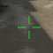
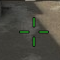
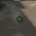

Whilst thinking of project ideas I gravitated around using Arduino or tools such as unity to create something physically functional or a games/program. During high school I used Arduino’s quite a bit during Systems Engineering, this included Bluetooth, keypad passwords, wired remote control vehicles and a Bluetooth vehicle. Because of this I would feel comfortable working with Arduino. I also thought quite a bit about using programs such as unity, unreal engine or visual studio to create either a game or program. Both options I would work passionately to create as I have found an interest working with both and I would be able to try something new with them although not being completely new to it.
For my project I would like to create an “aim training” program that should allow a user to do one task or a playlist of tasks, so they are able to improve their aiming ability. Although this isn't inventing a new wheel, I want my project to be more detailed and feature more analysis than current programs. For example, I would like to have statistics based off speed (average reaction and a log of per shot reactions), precision (based off distance from centre of target), accuracy (hit shots divided by total shots) and directional weaknesses. As well as scoring each task to be compared to the users average score and to help motivate, their highest score so that have a target to beat.
The program would be a free to download application for Windows computers, potentially compatible with Apple and Linux as well, though its targeted OS would be Windows. Upon opening the app, the user would be placed in a greyscale arena with a popup menu open for them to select their task, depending on the task there will be targets that appear in front of the user, where their objective is to score as high as possible (this is done by shooting as much targets as possible within 60 seconds, whilst losing points for missing the targets). As some users prefer to a set number of targets and a timed base score, this option would also be available. The user interface will be minimalist with consistent font and colour, whilst having headings for each category, accompanied by subheadings which would list the available tasks and there start button. The targets within these tasks will be a circular in shape and consistent size, although the user will be able to customise their colour, as well as their own crosshair colour, size and outline. The categories available will include speed, where the user's main goal is to complete the task as fast as possible with relevantly easy targets. Precision which would be similar, but rather the user will have smaller targets, so their objective is to be more accurate that they are fast. More specifically the tasks would include micro adjustments where the user's targets appear nearby to the last one so the user can improve upon small mouse movements, flicking over larger distances to keep consistent when moving over larger distances, tracing so the user can improve their ability to follow a target and its unpredictable movements. There will also be a reaction time-based task there the target won't move but will record the time taken for the user to shoot it, this is to both improve their ability to focus on the target and record improvements on their reaction time. It would also include a workshop function where users are able to create or import their own tasks, including a FAQ section for users to suggest possible improvements or new tasks that could later be implemented.
  
Out of the skills required the hardest learning curve would be learning about the databases and storing the users high scores as well as calculating their average score. On top of this developing the code for this program may also prove to be a challenge.
My initial ideas for a project included:
- Arduino plant monitoring system
- Phone apps
- RPG game
- Unity or Unreal engine aim trainer
- Visual studio program
Although these aren't very specific ideas, they were areas that I would be passionate about or have experience creating before.
I think this program should be appealing towards gamers who enjoy competitive first-person shooters as improving aim is a desirable skill for anyone trying to improve. Not only would this appeal to people familiar with existing programs, but also people who are new to first-person shooters and would like to fast track their ability to aim, whilst also being able to analyse their improvement over time. Even though the user base may seem small, statistics from my favourite first-person shooter CS:GO shows an average of players of 745,550.8 per day over the last 30 days (during the month of March 2021) which is a 0.61% gain from the previous month (source in bibliography). This being the player base of a singular game, the user base increases when including players from other games. My motivation for this is my gaming hobby and constant want to improve. Whilst thinking about projects, I thought this would benefit me the most. It is also a known way for improving aim and has been tested to prove it works.
(8min YouTube video)
Skill required:
- Game/Level design
- Coding
- Programming
- 3D modeling
- Knowledge of database
When finished the outcome of this program should be a working application that the target audience would be interesting in. It should also be quick to load and lag free for the user to use, this way they can spend less time waiting, especially so the user can open it up between games while waiting for their next game in queue.